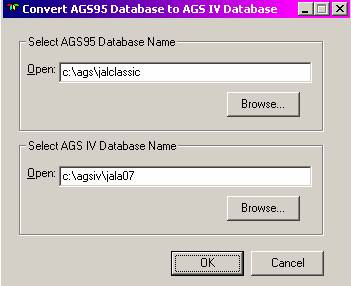

When a new application similar to an existing one is being built, in order to reduce the amount of work, a re-named copy of the database file of the existing application (*.mdb) may be made and placed in a new folder. Such transfer of definitions from one application to another is a common practice when similar applications or similar functions in different applications are being built. This new application can then be modified as needed.
Figure 12.1: Main Menu with Tools option selected.
When the two applications are not necessarily similar, or there is a need to copy a limited amount of information from one application to another, the “Export To New Database” and “Import From Existing Database” functions of the Tools menu of the AGS IV startup window may be used. The Export and Import functions provide the capability of copying selected Parameters, Screens, Reports, Triggers, Recording Maps, and Dits Buses (Import only) from one application to another.
The Export To New Database function can be invoked from the Tools menu of the AGS IV startup window (see Figure 12.1). Once invoked, it enables the selected copying of components of the current (source) application to a target application.
The target application may be a new application under development or, as is usually the case, it may be an empty “holding” database into which the desired components are temporarily exported. In the latter case, once the results of the Export To New Database are verified, the items are then imported into the target application using the Import From Existing Database function.
During a single Export To New Database session, any number of Parameters, Screens, Reports, Triggers, and Recording maps may be copied to the new application. The selection in each case is done similarly and is explained here only once, for the case of Parameters.
Upon selecting the Export To New Database dialogue box, similar to the one shown in Figure 12.2, the tabs for Parameters, Screens, Reports, Triggers and Recording Maps are presented. By selecting one or more of the tabs, the developer can specify the types of items to be exported.
In the case of the Parameters tab, the selection can begin by either entering the parameter name or, as is more common, calling out a group of parameters using a search criteria.
For example, in the case of Figure 12.2, the developer is looking for all parameters of “ALL” types, that start with the character “N”. After this initial specification, the developer may for the candidate parameters satisfying the above criteria. As the result of this search, a list of candidate parameters is presented in the left window of Figure 12.2. This is then followed by copying two of the candidates to the right window by first selecting them in the left window and pressing the button. Parameters can similarly be Removed from the Export list.
Once all the parameters to be exported are identified, the exporting may be started by pressing the button. In this case the system will ask for the path name of the target application and start the Export To New Database function.
Two additional buttons in the form, and can be used to save and restore the LIST of parameters that are about to be exported. This is useful in cases where a large effort has gone into the selection process and a similar Export may become necessary in the future. This feature may also be used if a partial selection is made and is to be continued at a later session.
Export of Reports, Screens, Triggers, Recording Maps, and SAR channels is very similar to the export of Parameters described above. Additionally, in the case of Reports, Screens, Recording Maps, and SAR channels, once an item is selected for export, all the parameters associated with that item will also be exported (provided the same parameter name does not exist in the target application).
The Import From Existing Database function, selected from the Tools menu of the AGS IV startup window (as shown in Figure 12.1), is almost identical to the Export To New Database. The exception to this fact is that, unlike the Export to New Database that is activated from the sending (source) application, the Import From Existing Database is activated from the receiving (target) application. Also, this function allows the importing of the entire DITS bus table and entire ACARS broadcast table.
Note that all movement of items from one application to another can be accomplished by either the Import or Export functions. The fact that both options are made available is only for the developer’s convenience.
This function enables the user to convert a database that was created in AGS95 and convert it to the AGS IV format. See Figure 12.2a.

This function enables the user to update a database with parameters, screens, reports, and triggers from a newer database. The purpose of this function is to take an older baseline database and update it to match a newer baseline database. Choosing ‘select baseline’ will bring up a dialog box where the newer baseline database can be selected. Once this is done, AGS IV will run a comparison of the newer baseline with the older one. It will determine which parameters are ‘no modify’ (these will be replaced automatically when the Update is done); which parameters are ‘no delete’ are in the newer database but are not in the older one (these will also be replaced automatically); which screens, reports, and trigger are ‘read only’ (will be replaced automatically). Any additional parameters can be selected for import (see figure 12.3).
When the ‘Do Update’ button is pressed, a warning message will appear indicating that you are about to overwrite parameters, screens, reports, and triggers. If OK is pressed, then the update will be done.
This function enables the user to take an existing comma-delimited text file and create a DAR map in AGSIV. When this function is chosen, the following dialogue box will appear.
The following describes the order and syntax of commands in the comma-delimited file that is required in AGS IV to Import a DAR map:
PAR,Mne,Desc,DataFmt,Lsb,Len,Rate,Sign,DsplyFmt,Offset,Slope,primBus,primSysId,primLbl,primSdi,bkupBus,bkupSysId,bkupLbl,bkupSdi
Par: key word for adding new DITS parameter to the database.
Mne: parameter mnemonic. The setting of Mne is an alphanumeric string
containing from 1 to 8 characters with the first character is an alpha
character. Mne can NOT be a duplicated name of any existing parameter in the
database. Mne is a mandatory field.
Desc: parameter description. The setting of Desc is a string of up to
40 characters. Default value is a
null string.
DataFmt: data format. The settings for DataFmt are: BNR, BCD, DIS, ISO#5.
Default value is BNR
Lsb: Least significant bit. The settings for Lsb are: 9 - 29. If
DataFmt = ISO#5, Lsb can go up to bit 31. Default
value is 11
Len: Length. The settings for Len are: 1 - 21. If DataFmt = ISO#5, Len
can be set to 1 - 23. Default value
is 1
Rate: Data acquisition rate. The settings for Rate are: 1, 2, 4, 8,
16, 32. Default value is 1
Sign: Sign. The settings for sign are: Y, N. Default value is N
DsplyFmt: Display format. The setting for DsplyFmt is a string (up to 12
characters) of the format like HHHH, AAAA, NNNN or NNNN.N. Default value is NNNNNNN
Offset: a numeric string. Default
value is 0
Slope: a numeric string. Default
value is 1
primBus: Primary Bus name. primBus has to be one of the existing Bus in
the database. Primary Bus is a mandatory
field.
primSysId: Primary System ID. The settings for primSysId are: 1, 2, 3, 4. Default value is 1
primLbl: Primary label in octal.
The settings for primLbl is an octal number: 1 - 377. PrimLbl is a mandatory field.
primSdi: Primary SDI. The settings for primSdi are: 00, 01, 10, 11, NA. Default value is NA
bkupBus: Backup Bus name. BkupBus has to be one of the existing Bus name
in the database. Backup Bus is an optional
field. If backup Bus is NOT specified, the system will ignore bkupLbl, bkupSdi,
and bkupSysId fields.
bkupSysId: Backup System ID. The settings for bkupSysId are: 1, 2, 3, 4. Default value is 1
bkupLbl: Backup label in octal.
The settings for bkupLbl is an octal number: 1 - 377. BkupLbl is a mandatory field when bkupBus is
specified, otherwise bkupLbl will be ignored.
bkupSdi: Backup SDI. The settings for bkupSdi are: 00, 01, 10, 11, XX,
NA. Default value is NA.
Primary errors for Par line
are:
Parm Mne already exists.
Line discarded
Syntax error. Line
discarded
MAP,MapName,SfSize,History,Comment
Map: Key word for adding new map in the database
MapName: Map Name, an alphanumeric string of one to 20 characters. If
MapName is a duplicated name of an existing map name in the database, the Map
line will be ignored.MapName is a mandatory
field
Sfsize: number of words per subframe. The settings for Sfsize are: 64,
128, 256, 512, 1024. Default value
is 1024
History: Recording history depth. Default
value is 4
Comment: a string of up to 20 characters. Default value is a null string
Primary errors for Map line
are:
Map Name already exists.
Line discarded
Syntax error. Line
discarded
REC,MapName,Mne,CorLsb,Reclsb,RecLen,Sign,SubFrame,Word,Age,Comment
Rec: Key word for adding parameter mnemonic to map.
MapName: Map Name. MapName has to be one of the existing map name in the
database. MapName is a mandatory
field.
Mne: parameter mnemonic. Mne has to be one of the existing parameter
mnemonic in the database. Mne is a mandatory
field.
CorLsb: Corresponding Least significant bit number. Default value is parameter LSB
RecLsb: Recording Least significant bit number. Default value is 1
RecLen: Recording length. The settings for RecLen are from 1 to 12 (if
Sign=N) or from 1 to 11 (if sign=Y).Default
value is 1
Sign: Recording sign. The settings for Sign are: Y, N. Sign can be set
to Y only when Sign of acquired parameter Mne is set to Y. Default value is N
SubFrame: Sub frame number. The settings for SubFrame are: 0 (all
subframes), 1, 2, 3, 4, 5 (1 & 3), 6 (2 & 4). Default value is 0
Word: Recording word number.
The settings for Word are: 2 to the map subframe size. Word is a mandatory field
Age: age within second. 0 = most recent. The settings for Age are 0
to acquisition rate minus 1 (rate-1). Default
value is 0
Comment: a string of up to 40 characters. Default value is a null string
Primary errors for Rec line
are:
Map Name does not exist.
Line discarded
Parm Mne does not exist.
Line discarded
Overlap. Line discarded
Syntax error. Line
discarded
REM This is a comment line
REM: Key word for comment line
All fields in PAR line, MAP
line, and REC line are separated by commas (","). Blank fields will
be replaced by default values.
Applications built for use on aircraft must usually be documented and the document saved while the application is in use. This option assists the developer in generating portions of the document that can automatically be extracted from the application database. The generation of the specification document can be initiated from the Generate Specs option of the Tools pull down menu selection of the main menu bar (see Figure 12.1).
Once the selection is made, a checklist is presented to the developer, who can then
select which sections of the document are to be generated (see Figure 12.5).
Figure 12.5: Generate Specs option of Tools Menu
SAR Channel specs are only available for FDIMU. Once the selections are made and confirmed, the developer is presented with the standard Windows form for selecting the name and location of the output file. After this AGS IV automatically generates the requested sections of the specification in a text file with line breaks only. This file can now be opened by any word processor or editor and formatted as desired.
The format of the file also lends itself to processing by a program or word processor macros, as unambiguous delimiters are used to separate the sections and subsections of the document.
Flight simulators used for testing of the applications need parameter information to correctly compile flight scenarios. Teledyne flight simulators extract the parameter definitions needed from the databases and AGS IV provides this option, in the Tools menu (see Figure 12.1).
Once selected, this option prompts the developer for a file name, and then generates a file that can be used to populate a flight simulator parameter database, with the information of the AGS IV parameters. The flight simulators can now interface with this database and compile their scenarios. It should be noted that the SDIs of the parameters in this generated file have the format of bits 9-10. For example, if the parameter is defined in AGS IV with an SDI of ‘01’ (bits 10-9), then the generated file will display that SDI as ‘10’ (bits 9-10).
This will generate an FRCS file with extension *.CSV. This is a tab delimited spreadsheet file that contains all of the parameters in the specified recording map (see figure 12.6).
The developer can generate a list of unused parameters by selecting the Find Unused Parameters selection from the Tools pull down menu of the main menu (see Figure 12.1). This function can be used to identify parameter candidates for deletion.
If an application has not yet been built, there will be a warning message stating that a Build Application or a Crosscheck Definition from the Build menu must be completed before the search. If this message is ignored, then only screens, reports, and maps will be searched for parameter usage. If a build or a crosscheck has been completed before this function, then the triggers will also be searched.
Once the selections are made, the developer is presented with the standard Windows form for selecting the name and location of the output file. After this AGS IV automatically generates the requested list in a text file with line breaks only. This file can now be opened by any word processor or editor and formatted as desired.
A part number checksum can be created using this function (see figure 12.7).
Figure 12.7: Part Number Checksum option of Tools Menu
A manufacturer password is needed to use this function. This enables the user to create and edit protected parameters, triggers, screens, or reports. Password access is currently restricted to Teledyne Controls and is not for airline use (see figure 12.8).